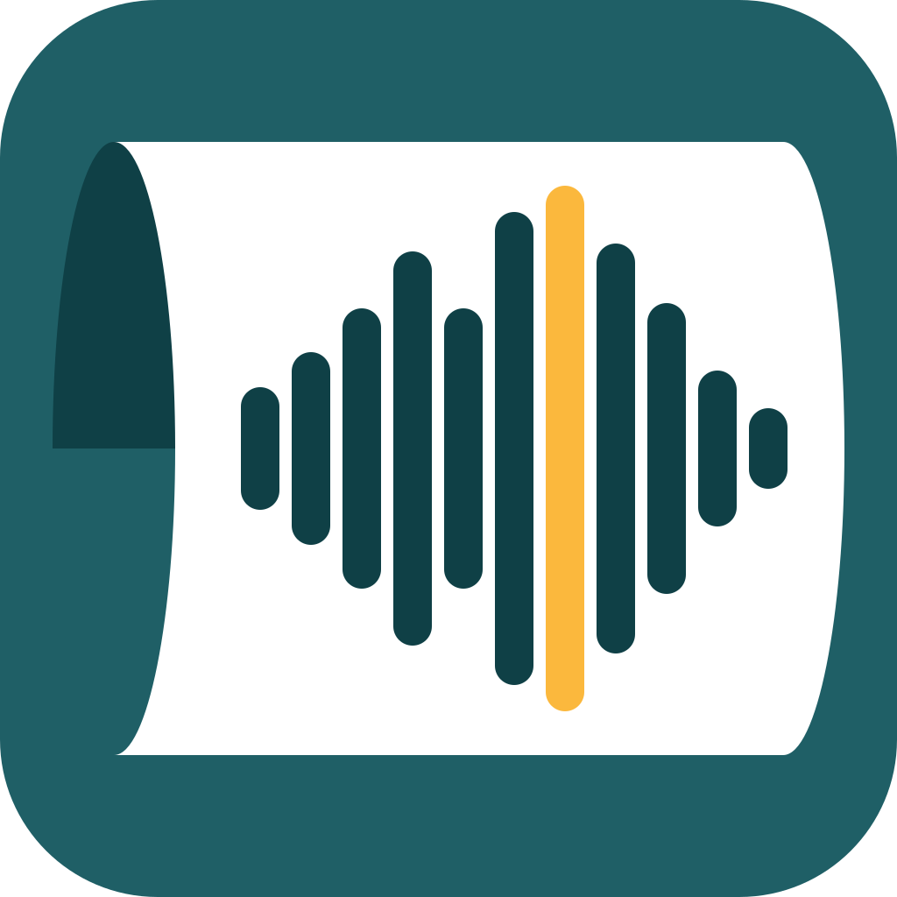
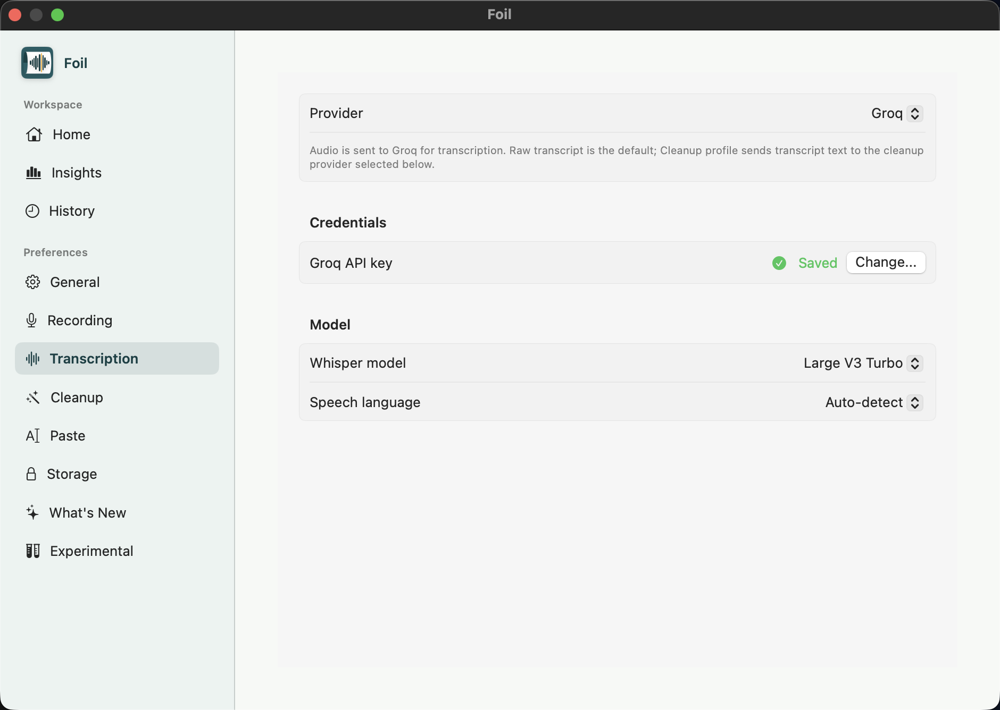

Could we move our sync to 3 PM?

FoilOpen-source Mac dictation
One recording. The right route.
Foil shapes text for people, agents, apps, and providers.

One thought, different destinations
Foil routes the text before it lands.
The same recording can become polished prose, raw agent intent, or structured notes.
You sayMove the sync to 3 and send the notes after.

move sync 3pm; send notes after
Follow-up notes, ready to paste.
Open source, controlled routes
Run it locally or point it at your own endpoint.
Provider settings keep the route visible instead of hidden in the background.
Localwhisper.cpp on device
Self-hostedOpenAI-compatible endpoints
Cleanuponly where it helps

Foil
A dictation app that understands where your words are going.
Open-source Mac dictation with local and self-hosted options.
Polish for people
Raw intent for agents
Local routes
Self-hosted endpoints
History